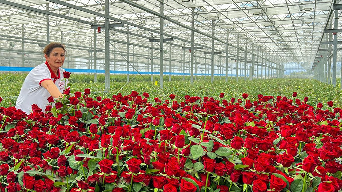

Rutuja's Refreshment
100% Organic, various varieties of Flower grown in our own farm.
ABOUT US
Welcome to Rutuja's Refreshments, where every bloom tells a story. Founded with a passion for nature's beauty, we are dedicated to bringing the freshest and most vibrant flowers to your doorstep. Our mission is to help you express your emotions and celebrate life's special moments through the language of flowers. At Rutuja's Refreshments, we believe that flowers are more than just a gift—they're a way to connect, to express love, gratitude, sympathy, and joy. That's why we meticulously source our flowers from trusted growers who share our commitment to quality and sustainability. Each arrangement is crafted with care, ensuring that every petal is perfect and every bouquet radiates beauty. Whether you're looking for a simple bouquet to brighten someone's day, an elegant arrangement for a special occasion, or custom designs for weddings and events, our team of floral experts is here to bring your vision to life. We take pride in our attention to detail, personalized service, and our ability to create stunning floral displays that leave a lasting impression. Thank you for choosing Rutuja's Refreshments. We look forward to being a part of your most cherished moments.
VARIETIES
Floribunda Rose
This rose is a cross between Polyantha rose and HT. The plant features dense clusters of big flowers in beautiful shades of yellow, white, pink, purple, and orange.
Grandiflora Rose
One of the striking features of this rose is its enchanting shades of yellow, orange, red, pink, and purple.
Shrub Rose
This rose displays features of traditional and modern roses. Flowers have double petals and are closely fitted to each other, giving it a small cabbage-like appearance.
Kashmiri Rose
This rose is great for cut flowers. It features a light scent and eye-catching bright red flowers. The variety resembles HT.
Alba Rose
This is one of the oldest varieties of rose. The plant can withstand shady environment and shows resistance to diseases.
Damask Rose
This rose is a cross between Rosa moschata and Rosa gallica. This variety features flowers from deep pink to light pink.